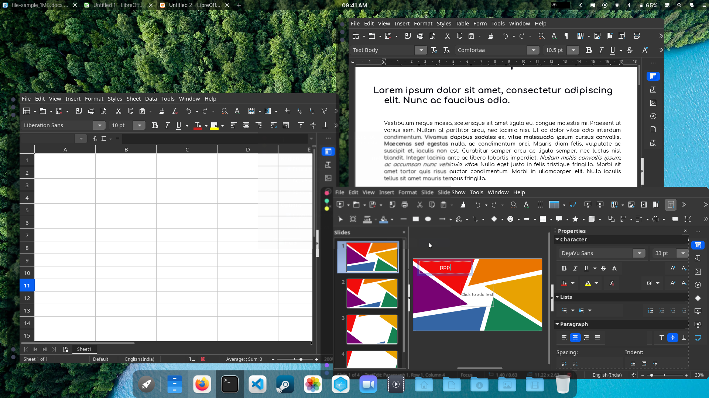

Getting Started
Downloading CalinixOS
Every release of CalinixOS is available for download, whether the current stable release or upcoming preview releases. When you visit the download page you will find a link to each of the four main editions , as well as a checksum file for each. A checksum can be used to check the integrity of the disc image file you download to make sure it hasn’t been corrupted during the download.
Latest Stable ISO
Navigate to the Download Page of all editions of Calinix. Download the latest stable ISO from the website.
Latest Development ISO
We use Github Actions and Artifacts to automate our disc image (ISO) building process. Hence all our latest development ISOs are in our Actions Page. Choose the latest action and in the main page of the specific action, you will find a section called Artifacts which stores our ISOs. Simply click the Artifact named Calinix <Release Tag> DevISO and a .zip archive will start downloading. Extract the archive. The ISO will be present inside the folder
Torrents
Our stable releases are hosted as torrents by FossTorrents. It can be directly downloaded. If you use torrents, you know how to.
 CalinixOS Alpha 6-4
Writing a Disc Image
A disc image is not a copy-and-paste duplication of files: it’s a bit-for-bit copy of the raw data that makes up the files and folders of that disc. This is why just copying a disc image file to a disc (or USB flash drive) to begin installing won’t work: you’ll need to use a disc burning or image writing application to translate that raw data into the files and folders.
Once converted, the files can be used to run CalinixOS in LiveCD mode without having to install it to your system, and/or install CalinixOS on your system. It’s important to note CalinixOS will not have full functionality when run in Live-CD mode. For example, you will not be able to save any changes to the system. Due to the amount of software included on the full edition disc images you may need to use a DVD instead of a CD.
Many people routinely use a DVD rather than a CD even for the smallest disc image files. Not only is a DVD faster to burn but they allow higher data access rates so the Live-CD loads faster and the installation completes sooner.
Burning to a CD/DVD in Linux
If not already installed, several different software burning applications should be available for installation from your distribution’s Software Center / Software Manager / Package Manager / repositories. Popular burners include XFBurn, K3b, and Brasero. Which one you choose is entirely down to personal choice, though your operating system will usually install one suitable for your desktop environment. To simplify things a little, the following steps for burning your downloaded CalinixOS disc image use Brasero.
Burning using Brasero - Insert a blank CD/DVD. - Start the Brasero software burner. - Click the Burn Image - Burn an existing CD/DVD image to disc button to open the Image Burning Setup window. - Click the button beneath the title Select a disc image to write to open up your file manager. Locate and double-click the downloaded disc image file to load it. Upon automatically returning to the Image Burning Setup window, note that the disc image file is now listed as the disc image to write. - The blank CD/DVD you inserted should be automatically listed underneath the title Select a disc to write to. If not, click the button to select it manually. - Click the properties button to open the properties window, and then click the button beneath the title Burning Speed. We strongly recommend you select the slowest speed available. Once selected, click the Close button. We strongly recommend you select the slowest speed available when burning to disc in order minimise the possibility of corruption during the burning process. - Click the Burn button to start the burning process. If necessary, follow any on-screen instructions provided.
Burning using Windows Disc Image Burner
Right-clicking on the disc image file and selecting Burn disc image will start the Windows Disc Image Burner program. This makes the process of burning to a disc very straightforward:
- Insert a blank CD/DVD into your disc drive.
- Start Windows Disc Image Burner.
- Select your CD/DVD drive in the Disc burner menu.
- Click Burn.
Writing to a USB flash drive in Linux
To take advantage of the faster access times and much quieter nature of a USB flash drive, there are a number of methods of writing the disc image file. One of the easiest is to use SUSE Studio Imagewriter.
SUSE Studio Imagewriter should be available for installation from your distribution’s Software Center / Software Manager / Package Manager / repositories. Once SUSE Studio Imagewriter has been downloaded and installed, ensure that your USB flash drive is plugged in before starting the application. The process of using SUSE Studio Imagewriter is very straightforward:
- Click on the centre icon.
- Navigate to where you downloaded the disc image file, and select it.
- Ensure that your USB flash drive has been selected from the dropdown menu.
- Click on the Write button.
- Once it has finished, reboot your system, making sure to select the USB flash drive as the boot device in the BIOS menu (or its UEFI equivalent).
Using the CLI
If you don’t want to install extra software, and you are comfortable using the command line, there’s an even easier way of writing a disc image to a USB device.
- Connect the USB flash drive to your PC, open a terminal and
cdto where you downloaded the disc image. - Check the device identifier with:
sudo fdisk -l. - Write the image with:
sudo dd if=path/to/{ISO File} of=/dev/(Device identifier from above) bs=4M
My USB drive is at /dev/sdb and ISO is at ~/Downloads/Calinix-Arch-21.11.21-x86_64.iso
So I would use:
sudo dd if=~/Downloads/Calinix-Arch-21.11.21-x86_64.iso of=/dev/sdb bs=4M
- Once completed reboot your system and boot from the USB drive by selecting it as the boot device in the BIOS menu (or its UEFI equivalent).
Writing to a USB flash drive in Microsoft Windows
Rufus
For Windows users using USB media, Rufus is highly recommended.
- Select the USB key to be used in the Device menu. Then, on the line beginning with Boot selection, click on Select to select your downloaded disc image, and then Start. After doing so, select DD Image in the window that appears. Rufus with recommended settings

Etcher
Another recommended piece of software is Etcher. It is incredibly simple to use. All you have to do is select the disc image, the USB drive, and start flashing the image!